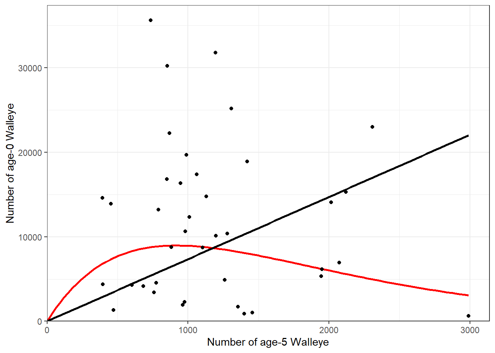

library(FSA)
library(tidyverse)
wae <- read.csv("https://raw.githubusercontent.com/droglenc/FSAdata/master/data-raw/WalleyeEL.csv")
rckr <- srFuns(type="Ricker")
ind <- srFuns(type="independence")
## Multiplicative Ricker Model
svR <- srStarts(age0~age5,data=wae,type="Ricker")
srR <- nls(log(age0)~log(rckr(age5,a,b)),data=wae,start=svR)
cbind(estimates=coef(srR),confint(srR))
predMeanR <- rckr(1178,a=coef(srR))
## Independence Model
svI <- srStarts(age0~age5,data=wae,type="independence")
srI <- nls(log(age0)~log(ind(age5,a)),data=wae,start=svI)
c(estimates=coef(srI),confint(srI))
predMeanI <- ind(1178,a=coef(srI))
( test <- extraSS(srI,com=srR) )
ggplot(data=wae,mapping=aes(x=age5,y=age0)) +
stat_function(fun=rckr,args=list(a=coef(srR)),color="red",size=1) +
stat_function(fun=ind,args=list(a=coef(srI)),color="black",size=1) +
geom_point(data=wae,mapping=aes(x=age5,y=age0)) +
scale_x_continuous(name="Number of age-5 Walleye",
limits=c(0,NA),expand=expansion(mult=c(0,0.05))) +
scale_y_continuous(name="Number of age-0 Walleye",
limits=c(0,NA),expand=expansion(mult=c(0,0.05))) +
theme_bw()